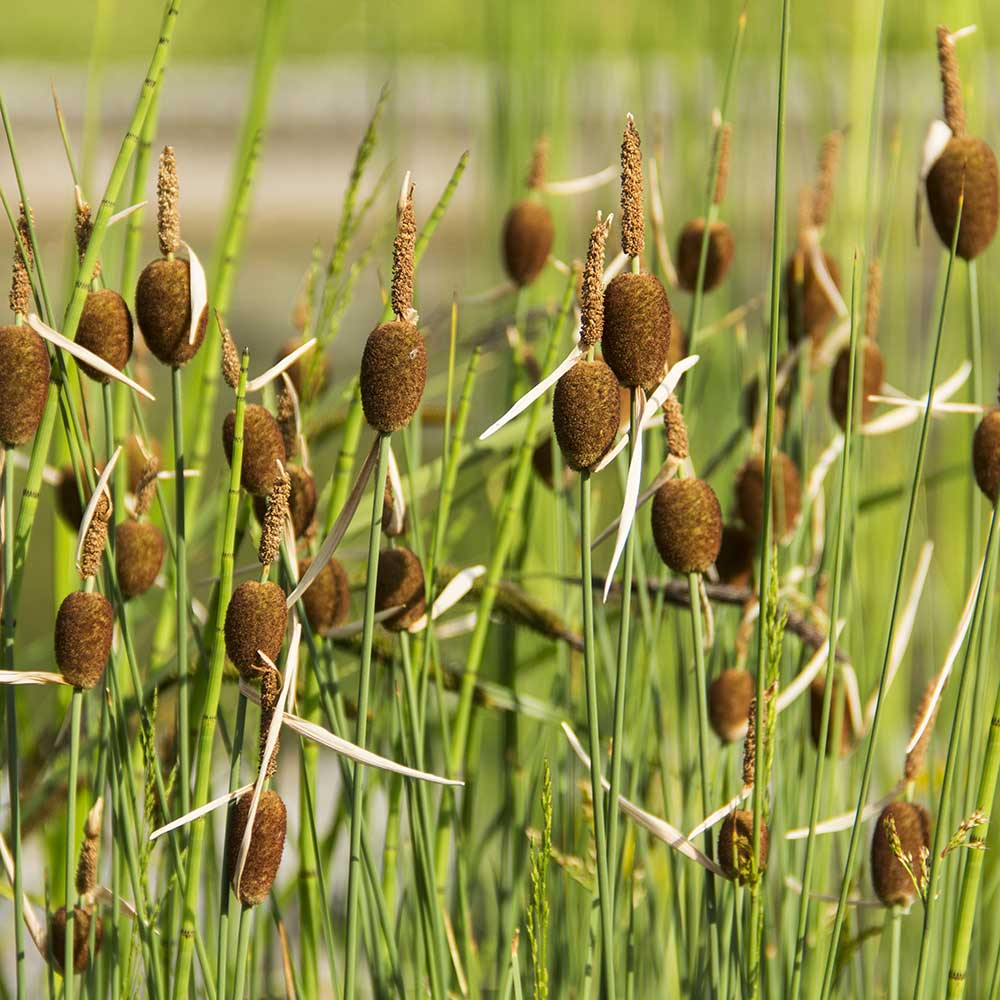

Taiga Growing Season Information
Average temperature: 50 F
Average Annual Precipitation: 12-33 in
Soil: Young, low in nutrients, PH: ~5

City/Zip
Current Weather Temperature 76F
Temperature of Biome(pulled from DB)
Temperature gradient (average Temperature of biome vs current weather temperature)
Temperate Deciduous Forest Growing Season Information
Average Temperature: 70 F
Average annual precipitation: 30-60in
Soil: Very fertile high in nutrients, PH: 3.0 - 5.0
City/Zip
Current Weather Temperature 76F
Temperature of Biome(pulled from DB)
Temperature gradient (average Temperature of biome vs current weather temperature)
Chapparal Growing Season Information
Average Temperature: 80
Average Annual precipitation: 10-17 in
Soil: Low nutrients, Low PH
City/Zip
Current Weather Temperature 76F
Temperature of Biome(pulled from DB)
Temperature gradient (average Temperature of biome vs current weather temperature)
Grassland Growing Season Information
Average Temperature: 70 F
Average annual precipitation: 10-30 in
Soil: Dark, nutrient rich, PH: 6.0-6.3
City/Zip
Current Weather Temperature 76F
Temperature of Biome(pulled from DB)
Temperature gradient (average Temperature of biome vs current weather temperature)
Tropical Rainforest Growing Season Information
Average Temperature: 70 F - 85 F
Average Rainfall: 60-160 inches
Soil: Mostly volcanic, very fertile, PH 5.9 - 6.7
City/Zip
Current Weather Temperature 76F
Temperature of Biome(pulled from DB)
Temperature gradient (average Temperature of biome vs current weather temperature)